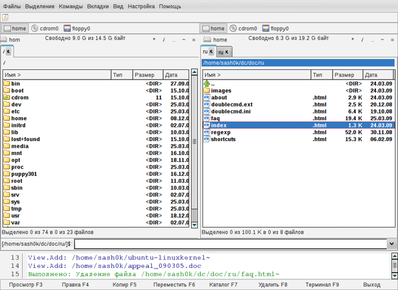

Double Commander — это кроссплатформенный файловый менеджер с двумя панелями. Целью данного проекта является создание файл-менеджера, аналогичного по функциональности Total Commander и совместимого с его плагинами. Double Commander абсолютно бесплатен и распространяется с открытым исходным кодом (по лицензии GNU GPL версии 2).
Вот некоторые характеристики Double Commander:
все операции выполняются в фоновом режиме
поддержка вкладок файловых панелей
настраиваемая панель инструментов с кнопками для запуска внешних программ или внутренних команд меню
возможности для группового переименования
настраиваемые колонки
встроенный просмотрщик файлов (F3) для просмотра файлов ЛЮБОГО РАЗМЕРА в шестнадцатеричном, двоичном или текстовом формате
встроенный текстовый редактор (F4) c подсветкой синтаксиса
работа с архивами так же, как с подкаталогами. Вы можете легко копировать файлы в архив и из него. Поддерживаются следующие типы архивов ZIP, TAR GZ, TGZ, а также BZ2, RPM, CPIO, DEB, RAR
расширенный поиск файлов, включая поиск текста в любых файлах
поддержка WCX, WDX и WFX плагинов от Total Commander
протоколирование файловых операций
и т.п...
Внешний вид Double Commander

Внимание: так как проект в настоящее время активно развивается, представленная в этом документе информация может быть неполной или неактуальной.